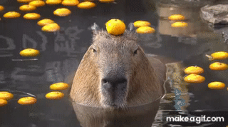
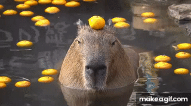

El capibara, chigüiro o carpincho es una especie de roedor de la familia de los cávidos,
nativa de Sudamérica.
Es el roedor viviente de mayor tamaño y peso del mundo.
El otro miembro existente de ese género es el capibara menor.
 
